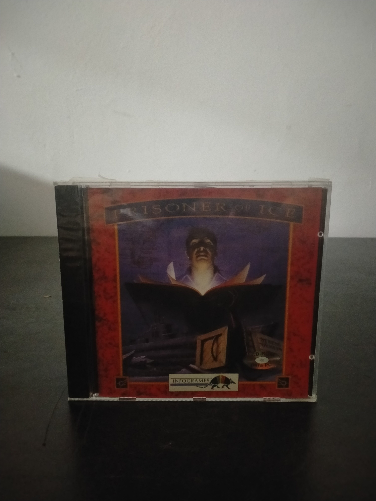

Ficha #000000
Prisoner of Ice
Prisoner of Ice es una aventura gráfica publicada por Infogrames en 1995 e inspirada en los Mitos de Cthulhu de H. P. Lovecraft. Concebida como continuación temática de Shadow of the Comet, sitúa al jugador en los años previos a la Segunda Guerra Mundial y combina espionaje, expediciones polares, arqueología fantástica y terror cósmico. La historia sigue al teniente estadounidense Ryan durante una misión a bordo de un submarino británico que transporta unas misteriosas criaturas recuperadas del hielo antártico. Su desarrollo emplea una estructura clásica de aventura point and click, escenarios dibujados, secuencias animadas, diálogos digitalizados y puzles basados en la exploración y el uso de objetos. Esta edición física en estuche jewel case para PC CD-ROM representa la etapa multimedia de Infogrames a mediados de los años noventa y conserva especial interés por su adaptación del universo lovecraftiano al formato de aventura gráfica cinematográfica.
- Formato
- Jewel Case
- Plataforma
- MsDos Win3.x Win95
- Género
- Aventura gráfica Point and click Terror Misterio Ciencia ficción
- Serie
- Todos Jewel Case
- Desarrollador
- Infogrames Multimedia
- Distribuidor
- Infogrames Multimedia
- EAN
- —
Contenido de la edición
- Estuche jewel case
- CD-ROM
- Carátula impresa
Preservación
- Protección
- No determinado
- Formato recomendado
- BIN/CUE
- Jugable en virtualización
- Sí
Preservación recomendada mediante imagen completa del CD-ROM original, preferiblemente en formato BIN/CUE para conservar posibles pistas o estructuras del soporte. Conviene digitalizar también la carátula y cualquier documentación asociada. La ejecución virtual es viable mediante un entorno MS-DOS o Windows clásico correctamente configurado.